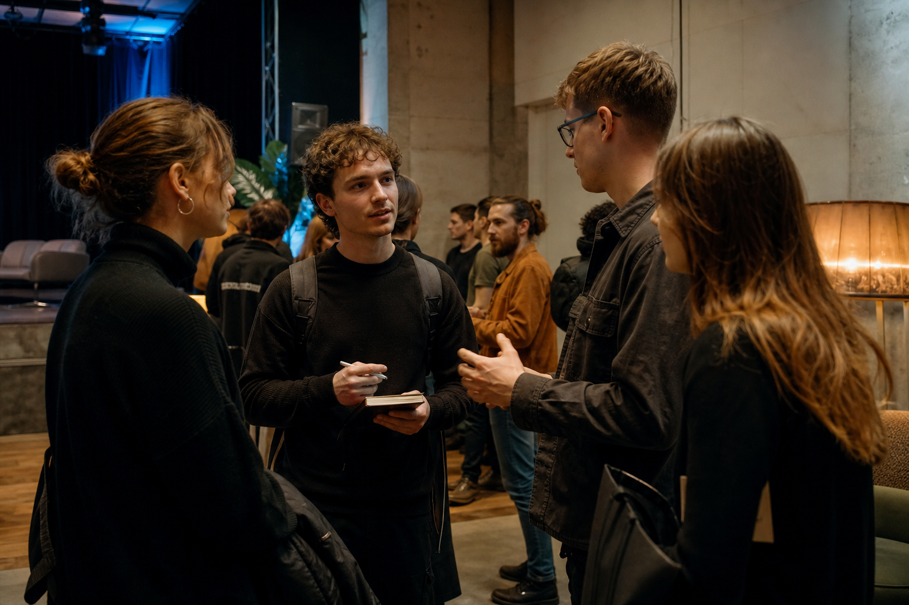

Start firmy
JDG, spółka i pierwsze formalności.
Katowice / 25.09.2026
Śląska Kuźnia Młodych Przedsiębiorców
Do spotkania
O wydarzeniu
Śląska Kuźnia Młodych Przedsiębiorców to praktyczne spotkanie dla osób, które chcą zrobić pierwszy albo kolejny krok w biznesie. Bez wielkich słów i bez pięciu godzin samego słuchania.
Porozmawiamy o starcie firmy, finansowaniu i formalnościach. Potem przejdziemy do AI, sprzedaży online i marketingu — z czasem na własną pracę i prawdziwe rozmowy.
To, co warto wiedzieć przed pierwszym ruchem.
45 minut pracy nad własnym pomysłem.
Ludzie, których dobrze mieć w swojej sieci.
Dla kogo?
Nie musisz prowadzić firmy. Wystarczy ciekawość, pomysł albo potrzeba zrobienia kolejnego kroku.
25.09.2026 / Program
Od pierwszych rozmów, przez dwa panele i warsztat, po wspólne omówienie efektów.
Czas na przyjście, rejestrację oraz pierwsze rozmowy i poznawanie innych osób.
Idea wydarzenia, organizatorzy, partnerzy i plan wspólnego popołudnia.
Od pomysłu do pierwszej konkretnej koncepcji biznesowej.
Zobacz procesAI, e-commerce i marketing w praktyce młodego biznesu.
Poznaj panelPrezentujemy wypracowane pomysły i razem wyciągamy najważniejsze wnioski.
Panel 01 15:45–16:45
Prawo, kasa i przetrwanie
Chcesz założyć firmę? Zacznij od rzeczy, które naprawdę warto wiedzieć. Bez prawniczego wykładu — za to z jasną mapą pierwszych decyzji.
JDG, spółka i pierwsze formalności.
Pierwszy budżet i bezpieczeństwo finansowe.
Dotacje, inkubatory i programy wsparcia.
Jak połączyć firmę ze szkołą lub studiami.
Moderowana rozmowa ekspertów zamiast klasycznych prezentacji.
Warsztat / 17:00–17:45
To nie kolejne 45 minut słuchania. Tutaj pracujesz nad własnym pomysłem — samodzielnie albo z zespołem.
Efekt?
Prosta koncepcja biznesowa, do której wrócimy podczas wspólnego podsumowania o 19:15.Panel 02 18:00–19:00
AI, e-commerce i marketing
Nie „AI kiedyś zmieni biznes”, tylko: co możesz wykorzystać już dzisiaj, by szybciej ruszyć, sprzedawać i rozwijać własny projekt.
Sztuczna inteligencja w codziennej pracy.
Mniej powtarzalnych zadań, więcej czasu.
Pierwszy kanał sprzedaży bez zbędnej komplikacji.
Docieranie do klientów bez ogromnego budżetu.
Narzędzia, procesy i decyzje — zero technologicznego dymu.
Paneliści
Pełny skład rozmów ogłosimy po potwierdzeniu wszystkich ekspertów. Nikogo nie wpisujemy „na próbę”.
Panel I
Panel I
Panel I
Panel II
Panel II
Panel II

Networking
Rejestracja i trzy przerwy tworzą naturalny czas na rozmowy z uczestnikami oraz ekspertami. Bez sztucznego „networkingowania” — po prostu dobry moment, by poznać właściwe osoby.
Rejestracja
Wypełnij krótki formularz. Potwierdzenie i link do kalendarza otrzymasz e-mailem.
Kto za tym stoi
Organizator
Przy współpracy z
Partnerzy strategiczni · Patronaty honorowe · Patroni medialni
Informacje pojawią się wkrótce.Gdzie się widzimy?
Nowoczesna przestrzeń na Śląsku, przygotowana do rozmowy, pracy warsztatowej i swobodnego networkingu.
Wyznacz trasęFAQ
Najważniejsze informacje w jednym miejscu.
Nie. Wydarzenie jest także dla uczniów, studentów i osób, które dopiero mają pomysł albo chcą lepiej zrozumieć, jak wystartować.
Spotykamy się 25 września 2026 roku w D9 Space w Katowicach. Program trwa od 15:00 do 20:00.
Tak. Czas na rozmowy przewidzieliśmy podczas rejestracji oraz trzech przerw kawowych.
Tak. Panele mają formę moderowanych rozmów, a przerwy tworzą przestrzeń do bezpośrednich spotkań.
Przejdziesz od pomysłu, przez problem i klienta, do rozwiązania oraz sposobu dotarcia. Możesz pracować indywidualnie albo zespołowo.
Tak. Po poprawnym wysłaniu formularza otrzymasz e-mail z potwierdzeniem i podstawowymi informacjami organizacyjnymi.
Po wydarzeniu
Tu pojawi się podsumowanie, galeria i Katalog Rekomendacji.
Najważniejsze wnioski, rekomendacje i pomysły wypracowane podczas paneli, warsztatów i rozmów.